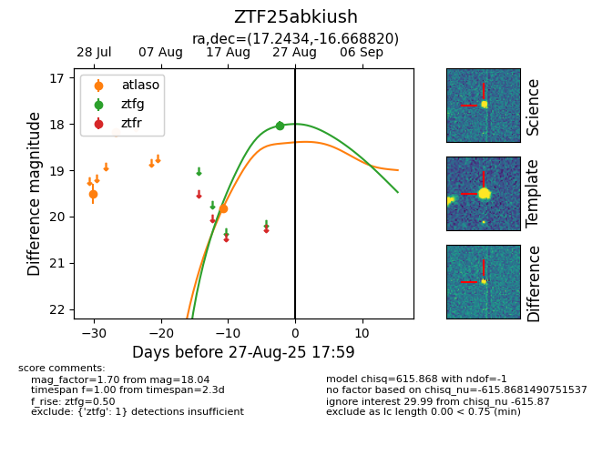

FINK: ZTF25abkiush
Lasair: ZTF25abkiush
ALeRCE: ZTF25abkiush
ZTF25abkiush (ztf,fink)
equatorial (ra, dec) = (17.2434,-16.66882)
galactic (l, b) = (145.0405,-78.78055)

last atlaso=19.82, ztfg=18.04
3 atlaso, 1 ztfg detections